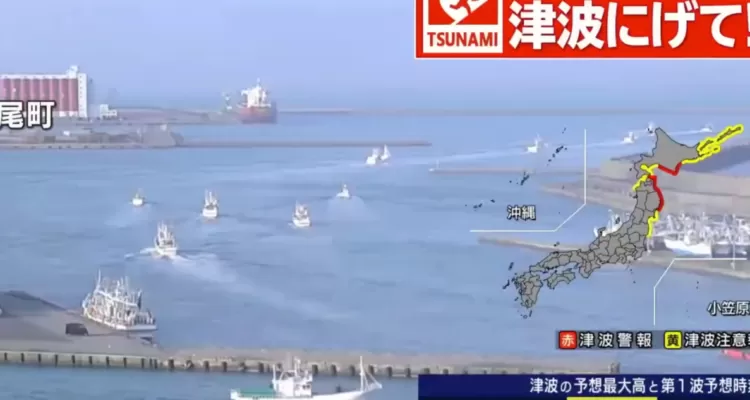

Publicado el 20 de abril de 2026

Un terremoto de magnitud 7,5 golpeó este lunes la costa oriental del centro y noreste de Japón, con una profundidad de 10 kilómetros, y llevó a las autoridades niponas a activar la alerta por tsunami, según informó la Agencia Meteorológica de Japón (JMA).
El sismo se registró a las 16:53 hora local (3:53 de la mañana en Chile), a unos 100 kilómetros del puerto de Kuji, en la costa de Sanriku, que se encuentra en el norte de Japón. La JMA emitió alertas de tsunami para las zonas costeras desde Hokkaido hasta la prefectura de Fukushima, con olas que podrían llegar a ser de tres metros.
En Chile, el Servicio Hidrográfico y Oceanográfico de la Armada (SHOA) informó que el terremoto que ocurrió en Japón “NO reúne las condiciones necesarias para generar un tsunami en las costas” de nuestro país.
El puerto de Kuji registró las olas más grandes del tsunami con 80 centímetros de altura, mientras que por el momento no se han registrado víctimas. La primera ministra, Sanae Takaichi, informó en declaraciones a la prensa que su gabinete está “confirmando el alcance de los daños humanos y materiales”.
Mientras tanto, las autoridades niponas solicitaron a la población que se encuentra en las zonas afectadas por la alerta de tsunami que evacúe a lugares seguros.
La previsión es que en los próximos días se produzcan terremotos de una escala similar en la misma zona, como ocurrió en ocasiones anteriores, según explicó en una rueda de prensa el director de la División de Observación de Terremotos y Tsunamis de la JMA, Shinji Kiyomoto.
El Gobierno nipón formó un equipo de emergencias para trabajar conjuntamente con el fin de brindar “todo el apoyo necesario”, afirmó en la red social X la oficina de la primera ministra, Sanae Takaichi.
Los operadores nucleares no detectaron anomalías ni niveles inusuales de radioactividad en torno a las centrales nucleares, según recogió la cadena de televisión NHK.
En este sentido, la compañía TEPCO indicó que “no se ha confirmado ningún impacto” en las instalaciones ni en la infraestructura de sus plantas nucleares, pero confirmó que había ordenado la evacuación de los trabajadores en Fukushima Daiichi y Fukushima Daini.
Debido a los cortes de electricidad y a la activación del sistema de prevención, el servicio de trenes, incluido el tren bala, se suspendió en varios puntos del país, como el trayecto entre Tokio y Shizuoka.
A principios de diciembre de 2025, un terremoto de 7,5 frente a las costas de la prefectura de Aomori dejó más de una treintena de heridos y provocó olas de hasta 7 metros, pero no se reportaron daños mayores.
Al igual que Chile, Japón se asienta sobre el llamado Anillo de Fuego, una de las zonas sísmicas más activas del mundo, y sufre terremotos con relativa frecuencia, por lo que sus infraestructuras están especialmente diseñadas para aguantar los temblores.